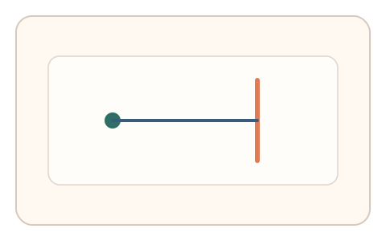
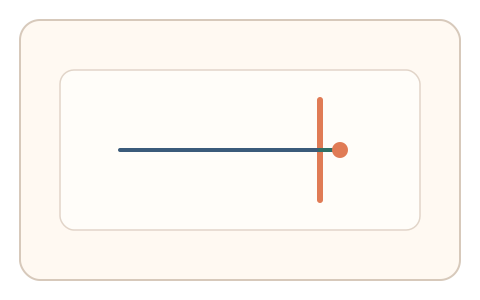
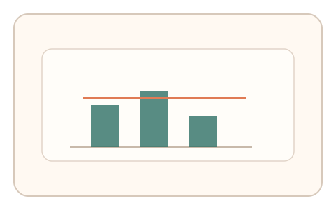

#15
生物肌肉与鼠标运动
已扩展
纠偏过冲签名
通过窄目标停靠任务测量过冲与回拉比例，提取方向性纠偏签名。
概念原文
要求用户精确停在窄目标上，测量其过冲/回拉比率。人类在不同方向具有稳定的“过冲-回拉”比例偏差。
用“过冲结构”区分人类控制模式与程序控制。
研究背景
受反馈延迟与运动控制机制影响，人在精确停靠时常出现过冲与回拉。过冲比例与方向性偏差具有稳定性，可作为行为签名，区分脚本的完美停靠或机械化轨迹。
核心机制
- 提供窄目标或细线作为停止点。
- 要求用户精确停靠并重复多次。
- 记录过冲距离、回拉幅度与纠偏时间。
- 比较不同方向的过冲‑回拉比例。
用户流程
- 步骤 1：用户按提示快速移动并停靠。
- 步骤 2：系统记录过冲与纠偏过程。
- 步骤 3：系统计算比例与方向偏差并判定。
判定信号
过冲距离与回拉比例
真实操控会产生稳定的纠偏模式。
纠偏时延与方向性偏差
人类在不同方向具有可测的偏置。
判定逻辑
要求过冲‑回拉比例落在合理区间，并在多次尝试中保持一致的方向性偏差；过度精准或无纠偏判异常。
对抗面
- 脚本模拟过冲轨迹
- 回放真实操控序列
防御与缓解
- 随机化目标方向与距离
- 加入轻微摩擦或延迟，检测实时纠偏
- 与速度曲线及抖动信号耦合判定
可达性与风险
提供更大目标与更宽松停止区，允许用户选择慢速模式完成。
- 窄目标可能造成挫败感
- 设备延迟会影响过冲特征
可视化状态

状态 1：窄目标停靠
细线目标要求精确停靠。

状态 2：过冲回拉
过冲后回拉形成纠偏轨迹。

状态 3：比例判定
计算过冲‑回拉比例与方向偏差。
参考资料
Motor control
说明精细运动控制与纠偏特征。
Control theory
说明反馈控制下的过冲与回拉机制。